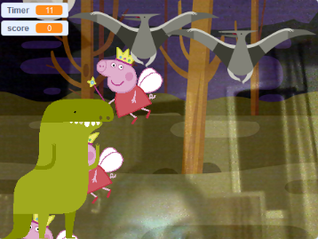

Jurassic Panic
September 2019, Computer Science Principles
The objective of this project was to create a game or story with user intercation and multiple stages in Scratch. Since my partner and I had previous experience in Scratch, we decided to challenge ourselves by creating a game using the video camera feature. The objective of our game was to have the user guide the dinosaur into eating a number of sprites under a time limit. We incorpated the video sensibility by having the user use their body to move the sprites into the mouth of the dinosaur. We had multiple stages making the game harder as it goes on by decreasing the time limit and later adding obstacles. As the game goes on you will face pterodactyls which will try to stop you. If you touch the pterodactyl then the game will be over as you have to try to avoid the dinosuar.